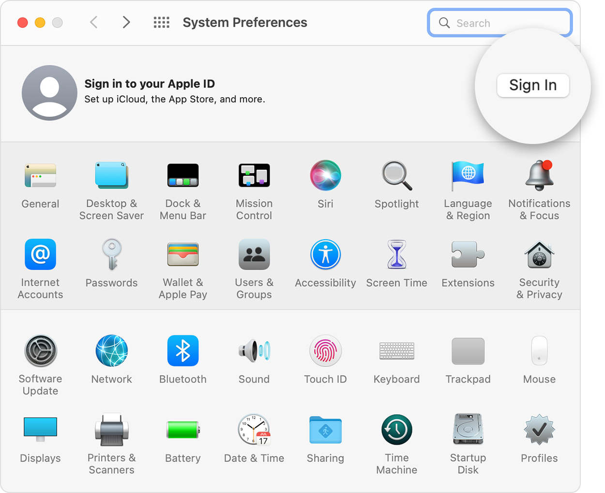

Sign in with your Apple ID
Your Apple ID is the account that you use to access all Apple services and make all of
your devices work together seamlessly. After you log in, you can use the App Store,
iCloud, iMessage, Apple Music, Apple TV+, and more.
- Sing in on your iPhone, iPad, or iPod touch
- Sign in on your Mac
- Sign in on your Apple TV
- Sign in on apps and other devices
Want to use Sign in with Apple on third-party apps or websites? Learn how to use Sign in with Apple.
Sign in on your iPhone, iPad, or iPod touch
1. Open the Settings app.
2. Tap Sign in to your [device].
3. Enter your Apple ID and password.
4. If prompted, enter the six-digit verification code sent to your trusted device or phone number and
complete sign in.
If you're already signed in to iCloud on the iPhone paired with your Apple Watch, you will automatically be signed in to that Apple ID. Learn more about how to set up and sign in to your Apple Watch.
Sign in on your Mac
1. Choose Apple menu > System Preferences.
2. Click Sign In.

3. Enter your Apple ID and password.
4. If prompted, enter the six-digit verification code sent to your trusted device or phone number and
complete sign in.
Sign in on Apple TV
1.From the Home screen, choose Settings.
2. Then choose Users and Accounts and select Add New User…
3. Select Enter New…, then follow the on screen
Learn about a few of the services that you can use with your Apple ID on Apple